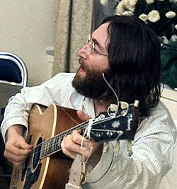
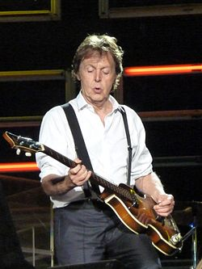

The Beatles fue una banda de pop/rock inglesa activa durante la década de 1960, y reconocida como la más exitosa comercialmente y la más alabada por la crítica en la historia de la música popular.12345 Formada en Liverpool, estuvo constituida desde 1962 por John Lennon (guitarra rítmica, vocalista), Paul McCartney (bajo, vocalista), George Harrison (guitarra solista, vocalista) y Ringo Starr (batería, vocalista).
John Winston Ono Lennon (de nacimiento John Winston Lennon; Liverpool, 9 de octubre de 1940-Nueva York, 8 de diciembre de 1980) fue un músico multiinstrumentista y compositor británico que saltó a la fama como uno de los miembros fundadores de The Beatles, reconocida como la banda más comercialmente exitosa y críticamente aclamada en la historia de la música popular. Junto con Paul McCartney, formó una de las parejas de compositores más exitosas del siglo xx.

James Paul McCartney Mohin (Liverpool, 18 de junio de 1942) es un cantautor, multiinstrumentista, y compositor británico. Junto a John Lennon, George Harrison y Ringo Starr, ganó fama mundial por ser el bajista de la banda de rock The Beatles, reconocida como la más popular e influyente en la historia de la música popular; su asociación compositora con Lennon es una de las más célebres del siglo xx. Después de la separación de la banda, continuó su carrera musical en solitario y formó Wings con su primera esposa, Linda, y Denny Laine.
